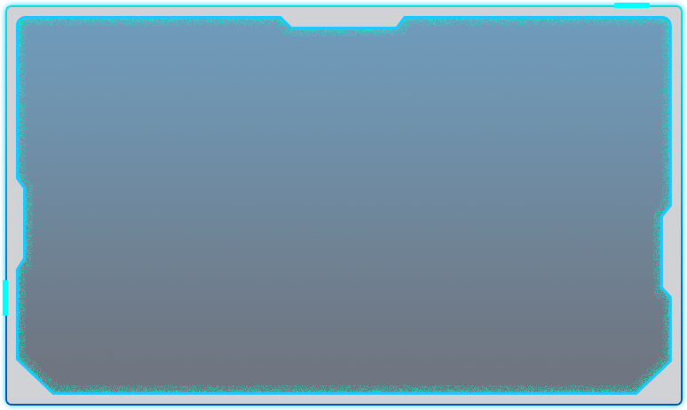

个人中心
聊天机器人

{% for pair in pairs %} {% with pair.0 as header %} {% with pair.1 as number %} {% with pair.2 as content %}
{{ header }} #{{ number }}
备注
{{ content }}
查看详情
删除记录
{% endwith %} {% endwith %} {% endwith %} {% endfor %}
返回首页